The cloud based storage and file sharing solution
The Summary
In the case of Cloud, I was the lead UI and UX designer for the project. I managed survey creation, competitive analysis, wire-frame development, prototyping, user/usability testing, as well as the mid and hi-fidelity mockup design.
User Research:
- Competitive Analysis
- User Surveys
- User Stories and Flows
- User Personas
- Wireframes
- Style Guide
- Branding
- Usability Tests
- Hi-Fi Mockups
- Prototyping
Tools:
- Google Forms
- Figma
- Prot
- Usabilityhub
- Whismical
The Problem
The client presented an idea for a cloud storage application but did not have much in the way of clear details outside of a few aspects. With this vague idea, they asked that I help provide a clearer cut direction as I proceeded forward. The problem points that were presented to me were: to develop a specific list of features that would be needed to get the product to market, create a unique brand Identity, and create a visual representation of the app.
The Solution
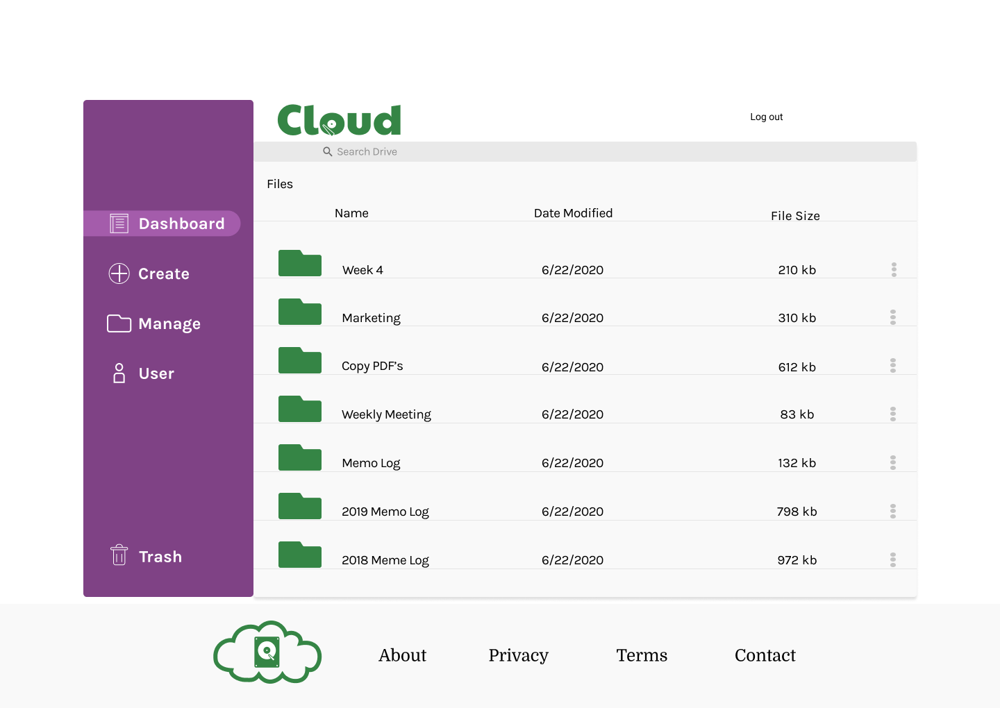The aspect of design that fascinates me the most is that you’re communicating with someone, the user, about how to interact with an app or product. It’s taking a moment and saying “I think this is nice but does it translate to someone else?” being able to communicate with others is a trait I find highly valuable, and the ability to do so is practiced naturally.
Process: Discovery and Research
Surveys
During the early part of the process I was dead set on making sure that the overwhelming majority of the decisions made concerning the design would be based on data gathered from potential users rather than going in blind. The most notable statistics were that 67% of potential users were between the ages of 26 and 35, 95% of potential users were most interested in features such as uploading directly to from a desktop computer or mobile device, followed closely by the ability to organize folders tags via tags and categories.
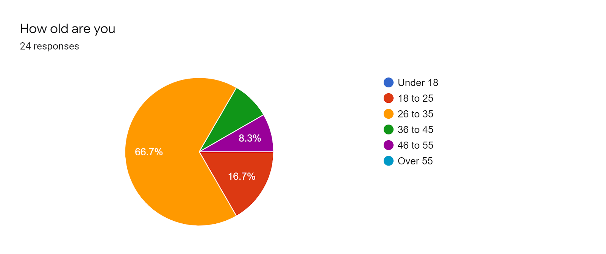 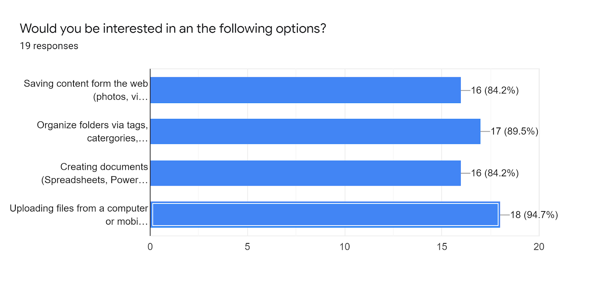I had several features that the client were interested in adding, so part of the survey asked users if they might be interested in these particular features. 95% of users expressed interested in directly sharing files to another user, while 79% of users indicated that they were interested in real-time collaboration on documents. Of the users interested in real-time collaboration, I was surprised to find that 93% of them preferred to have digital sticky notes on documents to indicate changes made!

The last two points were discerning what attracted them to the app that they already use, and how they prefer to login. 42% of users agreed that they prefer a simple app, as well as 21% would prefer to change from their current app because of a clunky User Interface. And of all users, 86% of users preferred to login via an email address.
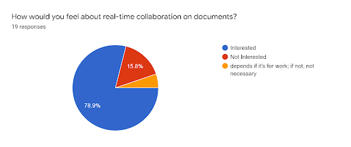Competitive Analysis
Continuing in market research, I took a dive into three different competitors in order to dissect each of their interfaces in order to fine things that I liked, issues that I didn’t like, as well as options/routes to take to make my design stick out uniquely in the overcrowded storage market.
Boxdrive
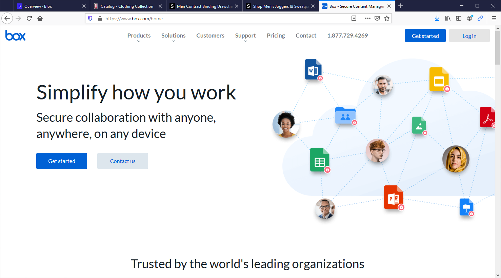For Boxdrive, I had mostly negative impressions. Their branding was very inconsistent, some places on the web still refer to them as “Box,” which was their older brand name, and it’s splash page felt very crowded. More importantly, it shares many of the same elements of dropbox, from it’s primary colors to its name. So it’s brand identity didn’t feel very strong to me. It’s dashboard was very nice and simple, nothing harsh or hard to understand, so I did feel like there were elements I could take from it to benefit my own design.
Dropbox
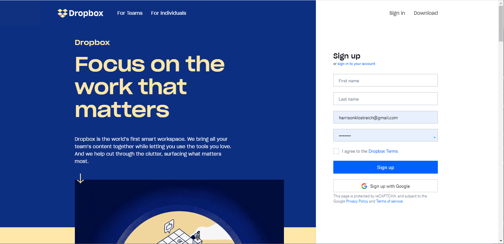For Dropbox, the onboarding process was somewhat intrusive. As you scroll down the page, a window flies in from the right hand side and serves as a very hard contrast white making it particularly hard to look at. While most of the language describes how easy the app is to use, and how intuitive it can be, there’s very little in the way of describing how the company can keep your information safe and secure. While this is somewhat of a nitpick, in this day and age it feels like a missed opportunity to reassure users that they’ll be protected as well as have simple usability.
Evernote
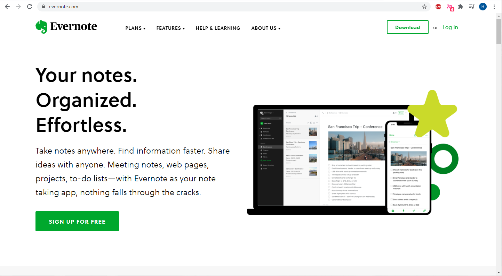This app was my favorite of the three as I felt it was the most unique. The logo with the elephant was a nice touch, and the color scheme consisted of more green variants with splashes of black. The biggest issue was that it remains one of the smallest among the crowd of storage apps, and it tends to be pushed to the wayside despite its unique branding.
Personas
Justine M.
PAL Youth Program Coordinator
27 yrs old
Chicago, IL
Motivations
Justine has been working as a PAL (Policemen's Association League) Coordinator for two years now. She’s not particularly drawn to computers but she has the most experience with current tech in her department. She enjoys working with the youth program, so she makes a considerable effort to keep their tech up to date and will occasionally act as the IT department.
Goals
* Share files directly with coworker
* Secure file sharing
Frustrations
* Current app’s UI is clunky
* Hard to organize documents
Sean W.
Marketing Director
34 yrs old
Los Angeles, CA
Motivations
Sean replaced the last marketing director who had been in the position for a number of years and was old fashioned, making most critiques and suggestions via pencil and paper. Sean’s made the change, but there aren’t many options real time changes and suggestions/notes.
Goals
* Real time collaboration
* Stable UI regardless of platform
* Easily organize documents and iterations
Frustrations
* No options for real time collaboration
* Hard to organize files tag files
User Stories
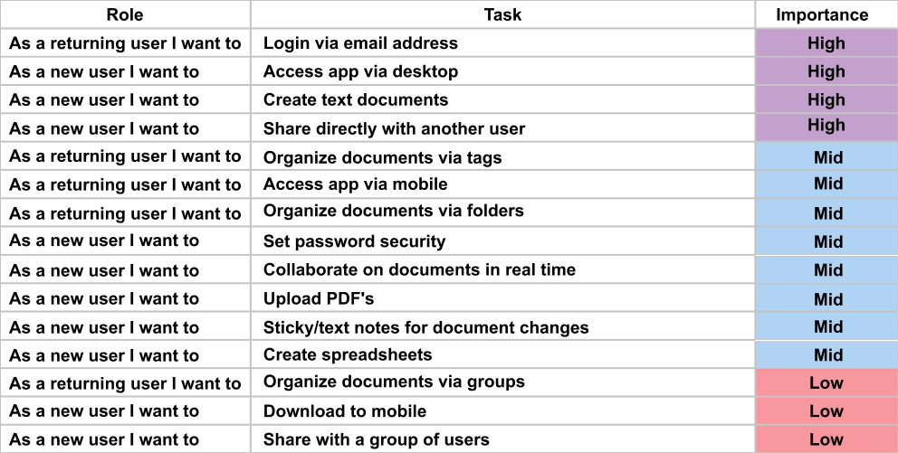With the user stories process I referred back to the competitive analysis to understand more about what features each of them specifically shared and get a much better idea of features I would need as well. I broke each of the three levels down as follows:
High = What we need to get to market immediately
Mid = Features that are wanted and will be added
Low = Features that would be nice to have but aren’t of the highest priority
Digital Wire-frames
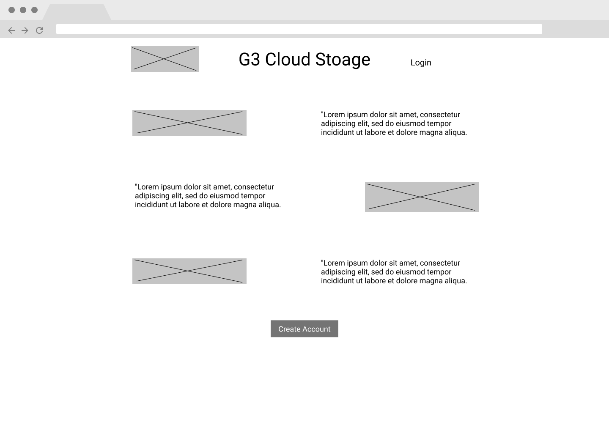 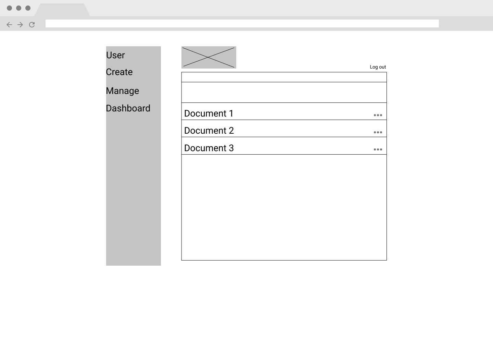This initial wire-frame served as a strong base for the idea I wanted to get across for the splash page. On the top line the logo, name of the company (G3 was a place holder), and the login link. I believed the “back-and-forth between the two column” layout would be effective as there’s consistently something for the eye to latch onto at any given time. Also, after conducting independent research, I found that large companies such as Google use this layout! Further solidifying my justification for using the layout on the initial splash page.
Usability Testing
From here, I conducted a usability test with two of the users took the initial survey and indicated that they would welcome follow-up interview questions. In this instance, I had each of the users perform the following actions: Login to the app, create a new document, and create a new folder while organizing the newly made folder via tags.
1
- Male, 31, Machine Tech, Neptune, NJ
- Usability rating: 4/5
- Liked the “login” button placement being under the sign up button.
- The Logout button is usually further to the right of the content
- Usually names a document after it’s been created rather than before
2
- Male, 33, Tech Sales Rep, San Jose, CA
- Usability Rating: 5/5
- User doesn’t consider “managing” documents as “tagging” documents, and was slightly confused.
- Would like to see something more dynamic for management options to pop up.
Branding
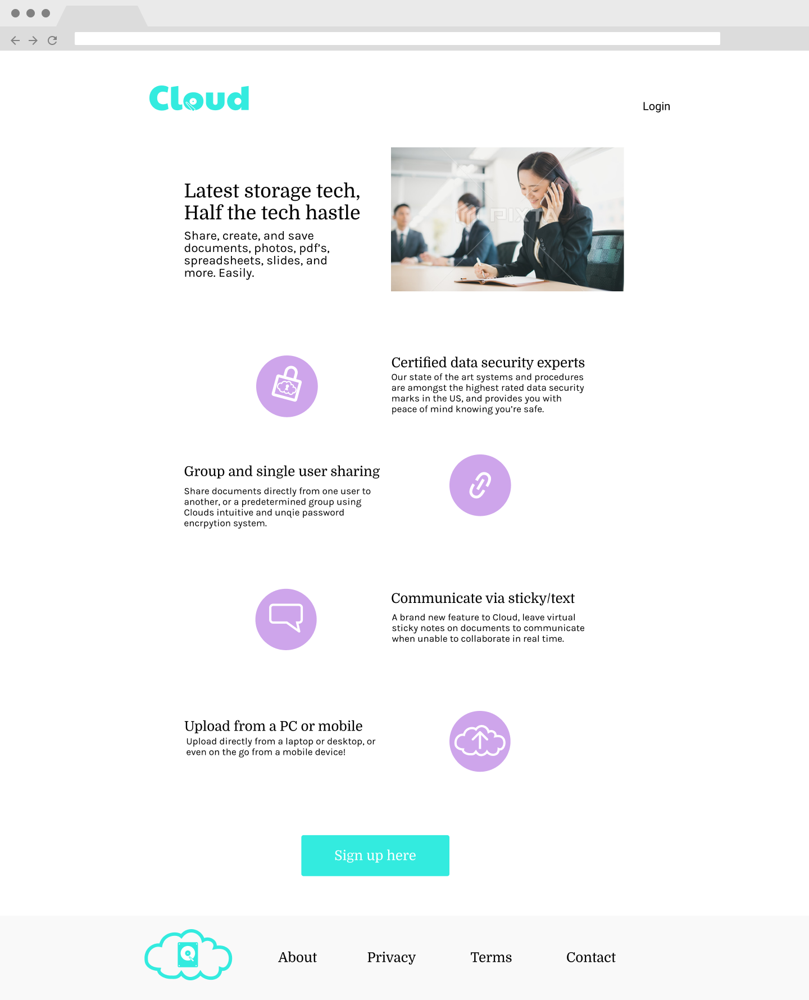 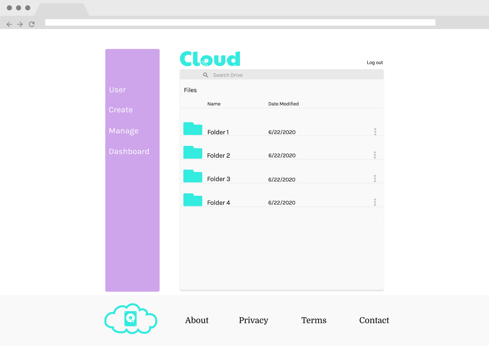This initial mock up made sense, and was in the direct I wanted to move into. However, it did maintain some technical issues that I needed to address before moving forward. Some elements are too small, type weight in some cases is thin, and the content is very narrow. While the narrow content structure was by design, the front page was more cramped than I intended.
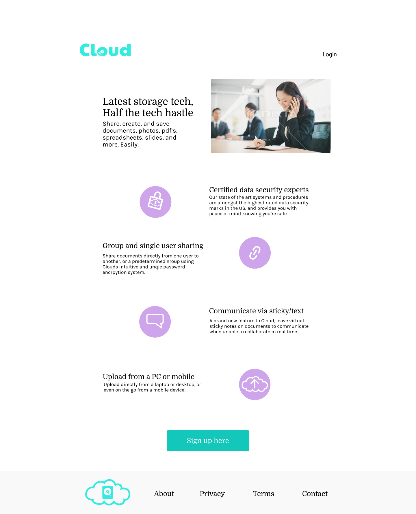 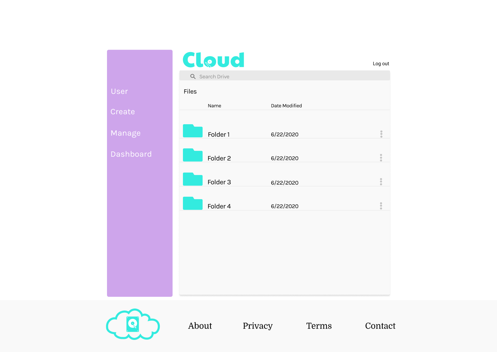With this mock up, the layout was how I planned and wanted it to turn out but there were definite changes that needed to happen. While the colors by themselves tested well, the lack of contrast from backgrounds and other colors caused a strain on the eyes. After consulting with design colleagues, a consistent suggestion was to darken each color to create less of a strain on the eye. This idea led to the next iteration.
In this iteration, I tackled the color change. The tough part was removing myself from the situation to help the project move forward. I’d become fond of the previous colors, but after introducing the colors to other designers, as well as prospective users, these fit much better. While the colors aren’t as floaty as earlier, they still maintain a sense of stability and approachability. The project comes first, and every decision must be backed up by data, and the data spoke.
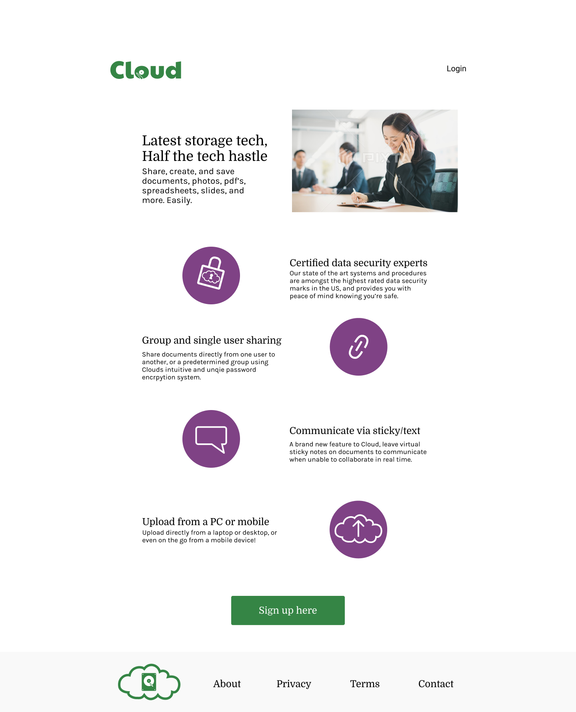In this last mockup iteration I addressed the smaller issues that began to stack quite a bit. Double checking margins, making sure the illustrated icons were properly centered within their circles, addressing the centering of the type, allowing for more space to be taken up by the elements themselves. It became very easy to miss these small things through the whole process of solving bigger problems, so maintaining that there needs to be an “extra sweep” to make sure I haven’t missed any less optical issues.
Brand Identity
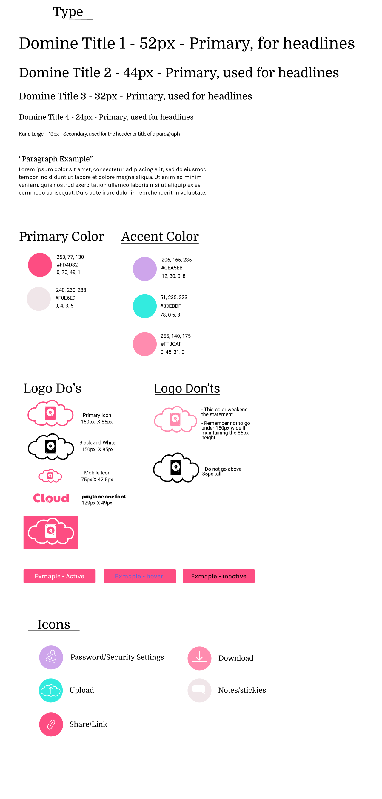 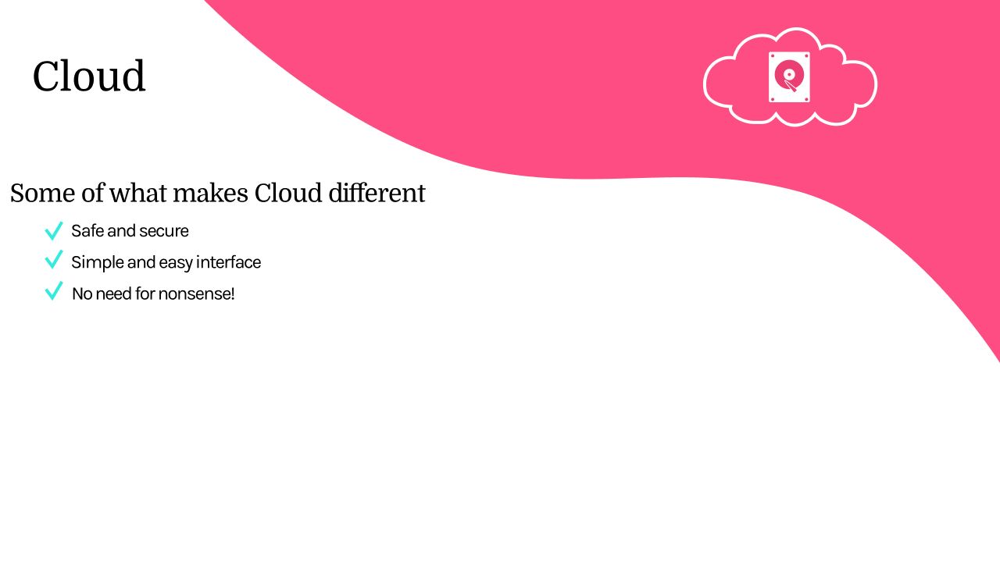In this initial style guide/branding document I’d started with the idea of using multiple colors, with red being the primary color and the following (purple, blue-green, so on) to be used as secondary/highlights throughout the work. The choice to use red was based on the research conducted in the competitive analysis; in order to stand out from several of the other products on the market (using mostly blue and/or light green) I would use red as the primary color. Despite its connotation as being less desirable in technology (often used in error codes or malfunctions), I felt it would work to help the project stand out. However, as before, the color choice didn’t end up testing well with users, and maintained that the contrast was too harsh against the white background.
Along with the color data, I also received data on the logo. In which, surprisingly, the participants were split down the middle on which they liked more. After testing again the results turned out to be the same. After deliberation, and input from senior designers, I decided to keep both the symbol and type logo, while making the type logo the primary.
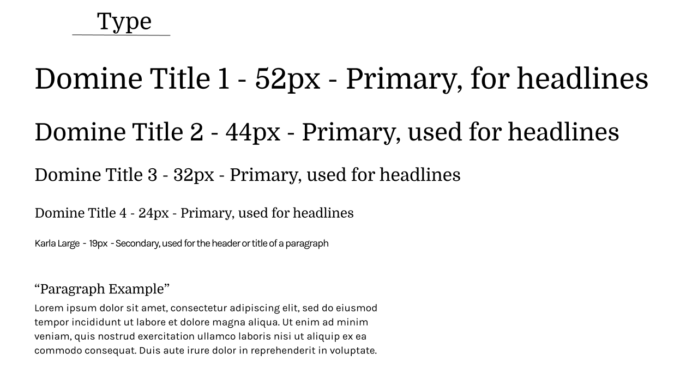
In the case of the final style guide, colors that tested consistently better with users were chosen, with green being the primary and purple being the secondary. Each of the logos are displayed in the primary color, and the purple is used to accentuate icons or add variation for text background. The type, Domine and Karla, also tested well amongst participants and continued to be the header and paragraph texts respectively.
Final Thoughts
This project was a very good example of a phrase that I heard closer to the beginning of my design journey; “Kill Your Darlings.” There were elements within the branding and color scheme that I truly loved, and felt strongly about using, but when I began to examine specific ideas in the grand scheme of the project I was forced to take a step back and reevaluate my process. Was this color scheme good for the project? Or was it just good for me? When I removed my ego from the process, many of the answers became very clear.
Despite wanting to use colors that had clashing contrast, and went against project industry standards (tech), I chose to base my decision on the data. In the end, it’s evident that this was the better choice. So, after taking two steps forward, I was able to take three steps forward in understanding more of what works and why, and will save time and effort in the future.